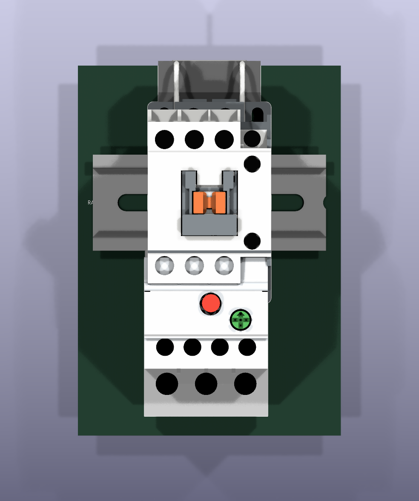
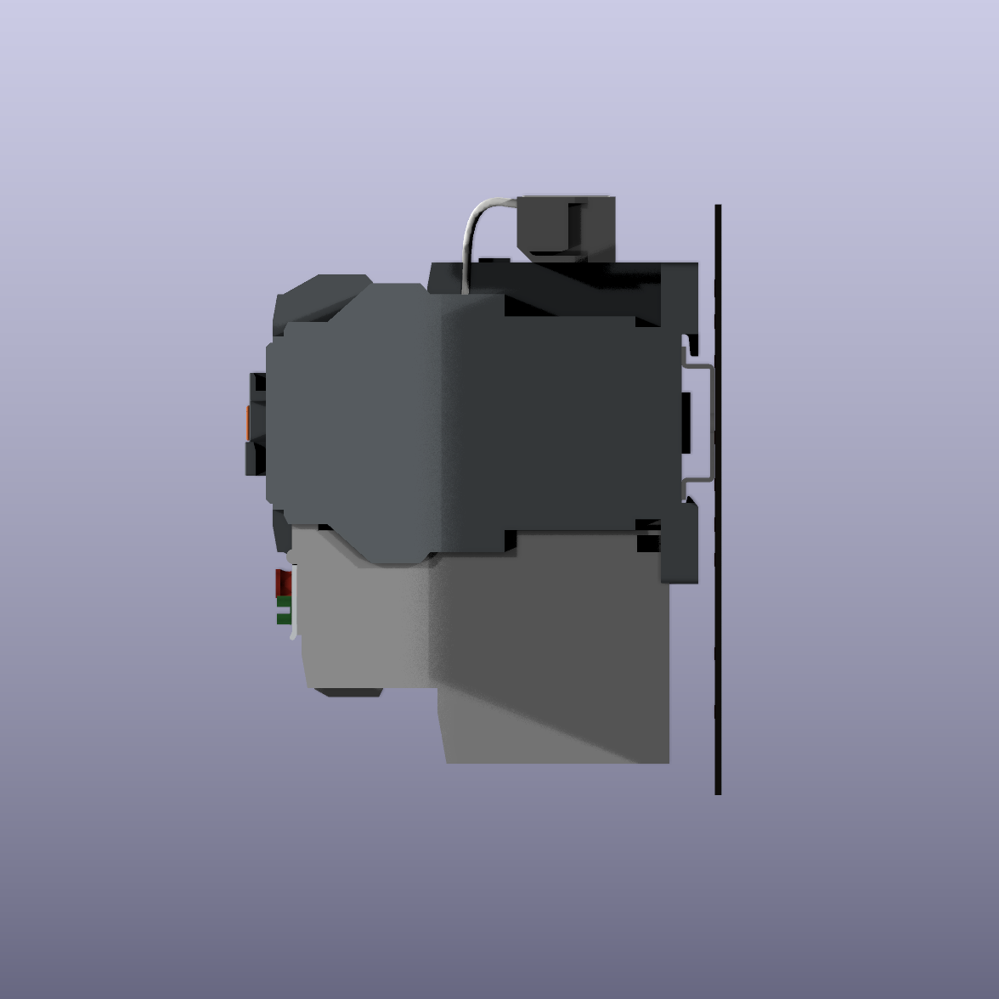
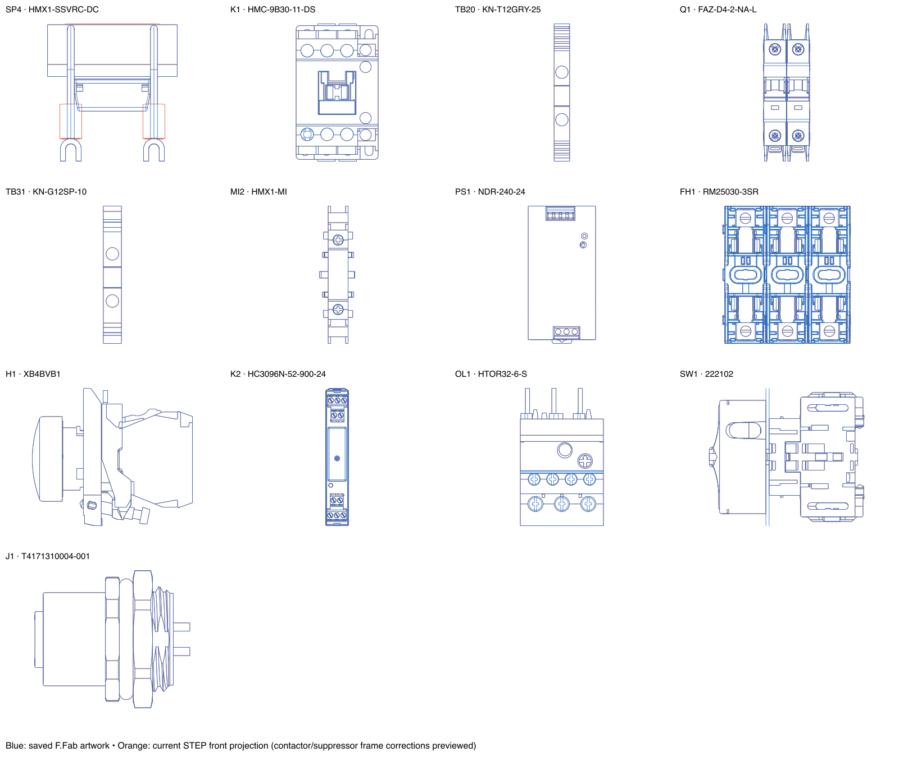

Checked 58 placed footprints across 14 device types. Corrected the contactor and suppressor export coordinate frames, set accessory mounting heights, repositioned the seven attached accessories, updated three older DIN-height settings, and restored the missing 300 mm rail model and library footprint.


| Part | KiCad model offset XYZ, mm | Rotation XYZ, ° |
|---|---|---|
| HMC contactor | 0, −97.3, 105.3 | 90, 0, 0 |
| HMX suppressor | 37.4, 4.736742, 22.584777 | 90, 0, 0 |
| HTOR overload | 0, 11.125, 58.3 | −90, 0, −180 |
These offsets compensate for each STEP file’s own origin. The contactor’s physical model spans Z=3.7–107.3 mm relative to the board mounting surface; the suppressor spans approximately 22.6–60.58 mm, and the overload 10.3–100.3 mm.
Accessory footprint origins relative to the contactor: suppressor (0, −32.013258) mm; overload (−1.2, +40.625) mm. All scales remain 1:1. The three supplied STEP files remain byte-for-byte unchanged.
Accessory placement was reconstructed from the orthographic screenshots and source mounting geometry. This reproduces the supplied nominal arrangement; it is not an exact extraction of Fusion joint dimensions or a collision-free fit certification. The supplied solids have overlap in the nominal assembly. Original artwork is retained, including detail removed in the newer STEP models. Existing wiring-pad fanouts remain intentional.
Blue: saved detailed F.Fab artwork. Orange: STEP projection. Residual differences on the three edited parts reflect changed CAD details; other small residuals reflect supplier drawing simplification or intentionally hidden features.